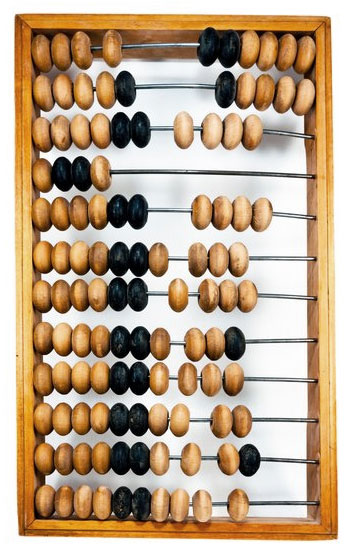

В истории цивилизации существуют творения, которыми люди пользуются со времен не поддающихся датированию. Например: винт, колесо, рычаг, коромысло, пружина... К этому ряду можно уверенно отнести "абак" - счетное устройство, позволяющее складывать, вычитать, делить, умножать и даже извлекать корни. Нам предмет известен как "русские счеты", - абак адаптированный к десятеричной системе.
Задокументировано использование таких счет в третьем тысячелетии до Нашей эры - в древнем Шумере. Не было ни Иудаизма, ни Христианства, ни Ислама, а какие-то наши предки работали на счетах не подозревая, что такие религии возникнут.
При строительстве храмов, дорог, виадуков в античные времена использовались только: водяной уровень, транспортир и абак. При том, что пользовались римскими цифрами.
Пять тысяч лет человечество использовало это изобретение. И на наших глазах прекращает. Мы свидетели невероятного.
В России счеты вошли в быт в XV-VXI веках и вышли, в наши дни, с появлением электронных счетных устройств. Итого, пять тысяч лет человечество пользовалось изобретением неизвестного светлого гения.
Наши дни. Захожу в сельский магазин. Покупаю три каких-то наименования. Продавщица пробегает пальцами по костяшками русских счет и называет сумму. Прикладываю банковскую карту к считывающему устройству. Звучит "пииик". Все. Купил.
Разумеется, продавец владеет современными способами расчета с покупателем. Но пользуется счетным устройством, которое ей удобно. Пощелкать костяшками ей не жалко, а мне приятно. Ухожу с ощущением теплоты.
С незапамятных времен народ лупил по костяшкам!
И вот. Почти ушло.
Будете в Терпилицах, обратите внимание. Удивитесь. (Только не в Магните :)